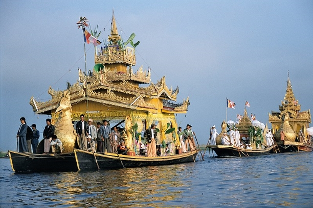
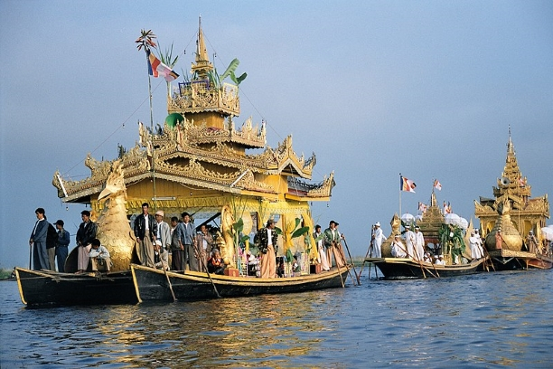
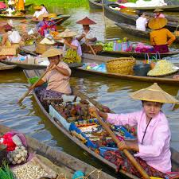
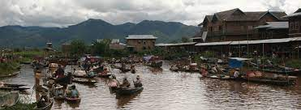

TOURIS
History and Background
Inle Lake is a major tourist attraction, and this has led to some development of tourist infrastructure. Many small and large privately-owned hotels and tour operations have arisen during the past few years. Local shops are flooded with consumer items, both local and foreign. The nearest airport is Heho Airport which is 35 kilometres (22 mi) away. There are flights from both Yangon and Mandalay. Yangon is 660 kilometres (410 mi) away by road and Mandalay is 330 kilometres (210 mi). A number of festivals occur from August to October on Inle Lake and in the surrounding areas. The ceremonial Hpaung Daw U Festival, which lasts for a total of 18 days, is closely followed by the Thadingyut Festival of lights. Inthas and Shan turn out in their best clothes in great numbers to celebrate the Buddhist Lent. Traditional boat racing, with dozens of leg-rowers in traditional Shan dress compete on teams with a team on each boat. These boat races are locally one of the most anticipated affairs during the Hpaung Daw U Festival. One of the tourist attractions in the village on the lake itself is the traditional silversmithing, which has fed into the local tourist economy. The silver is brought in from the mines that line the hills surrounding the lake and is boated into the village. Almost all the houses in the village on the lake itself sit on stilts and are made of woven bamboo. Tourists can satisfy their need for trinkets and memorable tokens by observing the silver being smithed and purchase items on-site. If silversmithing doesn't interest a visitor there are also local silk workshops that operate on the lake in a very similar manner as the silversmiths. Handmade goods for local use and trading are another source of commerce. Typical products include tools, carvings and other ornamental objects, textiles, and cheroots. A local market serves most common shopping needs and is held daily but the location of the event rotates through five different sites around the lake area, thus each of them hosting an itinerant market every fifth day. When held on the lake itself, trading is conducted from small boats. This 'floating-market' event tends to emphasize tourist trade much more than the other four. The Inle lake area is renowned for its weaving industry. The Shan-bags, used daily by many Burmese as a tote-bag, are produced in large quantities here. Silk-weaving is another very important industry, producing high-quality hand-woven silk fabrics of distinctive design called Inle longyi. A unique fabric called lotus silk, made from the lotus plant fibers, is produced only at Inle Lake and is used for weaving special robes for Buddha images called kya thingan. While hot air balloon flights are more popular in Bagan, they are also provided over Inle Lake with Balloons Over Bagan.[18] There is also a winery near the lake, called Red Mountain Estate.
Five Day market
 History and Background
One of the most popular things about Inle lake is to visit its floating market. A local market serves most common shopping needs and is held daily. The five days market rotates around the Inle Lake area, the towns of Shan State; Nyaung Shwe, Heho, Taunggyi, Minethauk, Shwe Nyaung, thus each of them hosting an itinerant market every fifth day. The different local tribe people rotate between five different locations over a 5-day period to sell their daily farm products. The History of becoming a Five Days Market is quite interesting. Back in the old days, The Shan Sawbwa, leaders of Shan State, would go village to village and house to house to tax. It was quite time consuming and in order to be more efficient, they would gather the people from nearby villages in one town at a certain day. Slowly people started to bring goods and trade while waiting for the Sawbwa to collect tax. Even though there is no longer Sawbwa today, the tradition remained.